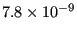

Next: *DEPVAR Up: Input deck format Previous: *DEFORMATION PLASTICITY Contents
Keyword type: model definition, material
With this option the mass density of a material can be defined. The mass density is required for a frequency analysis (*FREQUENCY), for a dynamic analysis (*DYNAMIC or *HEAT TRANSFER) and for a static analysis with gravity loads (GRAV) or centrifugal loads (CENTRIF). The density can be temperature dependent.
First line:
Following line:
Example: *DENSITY 7.8E-9
defines a density with value  for all temperatures.
Example files: achtelc, segment1, segment2, beamf.